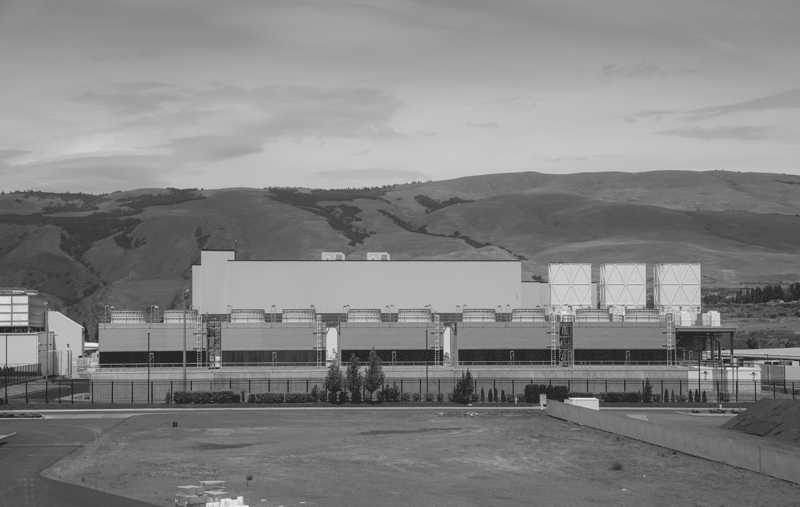
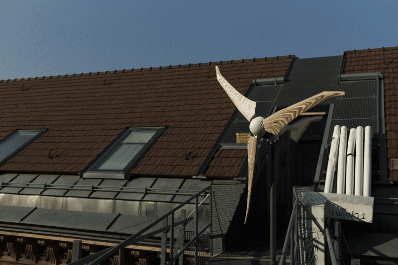
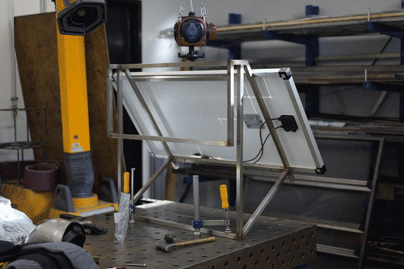
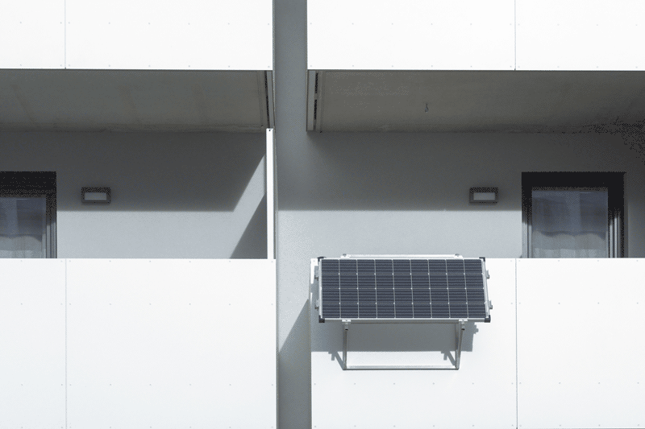
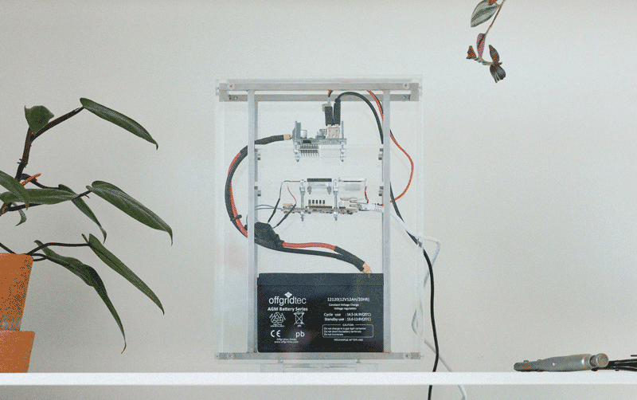
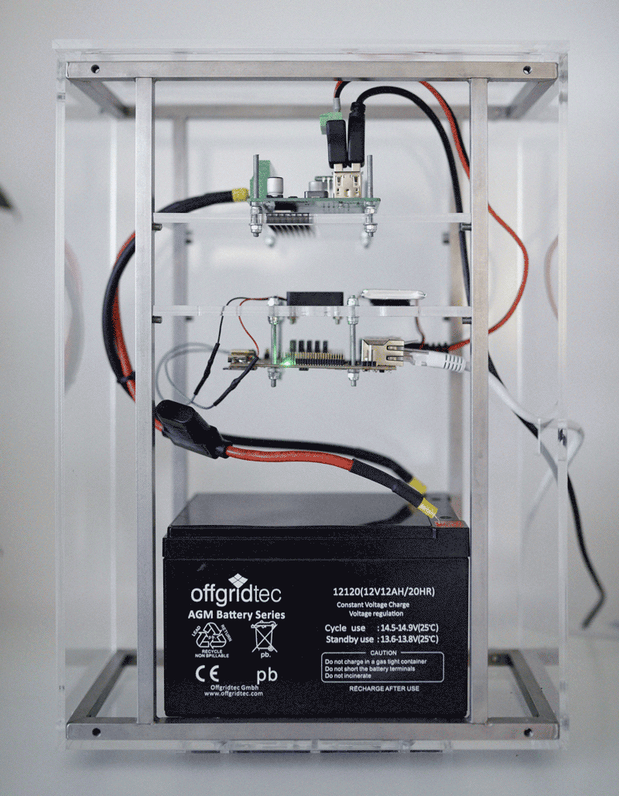
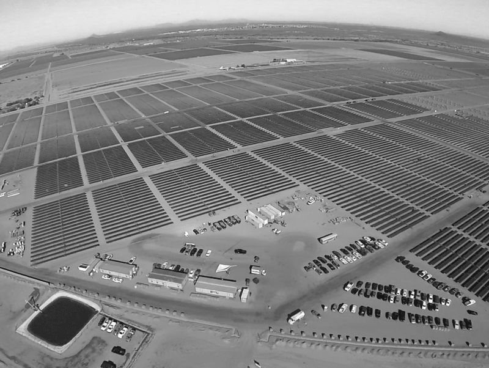

RECONFIGURING THE CLOUD
September 2017: A couple of friends and I are yelling blunt slogans like “Save the Internet” and “Our Data, Our Rules” as part of a small demonstration we organized in front of “Darwin’s Circle,” a periodical conference assembling various major tech companies in Vienna, Austria. The demonstration was one portion of a larger campaign and an animation series—a contemporary fairytale about e-privacy and data sovereignty—we developed for the Vienna Biennale. We were advocating for political engagement and a decentralized, democratic internet.
But to better grasp what a decentralized internet, and the configurations emerging from it, could look like, we first had to study and dissect the pieces that would make up its infrastructure.
The “cloud” | Google Data Center, The Dalles, Oregon, USA © Tony Webster, 2015 [source]
It soon became apparent that though the so-called “cloud” does severely influence our atmosphere, the transatlantic internet cables, data centers, and other physical structures that comprise the cloud share little else with its atmospherical eponym. While the internet is composed of very tangible, physical materials, its centralized remote structures more than often evade public gaze and discourse. What would it look like to store and live with our private information in our homes rather than in a server farm? And how could design respond to changing conceptions of privacy? Guided by various conversations with experts from the Viennese hacker and privacy scene, we explored these questions and more. We re-imagined traditional furniture into new pieces like “the dining server”, debated how to use the processors’ access heat at home, and speculated on what happens with an ex-partner’s backup files and server after a relationship ends. The designer and our dear friend Johanna Pichlbauer then illustrated some of these musings.
In 2018, as an artist and filmmaker with terabytes of raw video files, I opted to get my own server, putting in action what my friends and I had abstractly discussed earlier. I frequently found myself listening to the drives as they started and stopped spinning, touching the server rack, checking on how much heat it generated, how much energy it consumed, when it was active and when it went to sleep—a peculiar attempt at getting to know this new device in my living room. While I knew about servers’ relatively high energy consumption, it turned out to be rather difficult to obtain an informed, more holistic understanding of the internet’s ecological footprint. Since many studies do only focus on particular infrastructural segments and might for instance not factor in the embodied energy necessary to manufacture certain hardware, estimates on the internet’s energy consumption oftentimes vary greatly. With an exponentially growing demand for cloud computation, it is nevertheless clear that “business as usual” will sooner rather than later exceed our planet’s boundaries.
DIY windmill on the roof of the University of Applied Arts Vienna © Felix Lenz, 2018
When two of my colleagues and I were building a low-tech wooden windmill to test the University of Applied Arts’ new CNC mill later in 2018, I proposed we power the department’s server and website with it. Unfortunately, I soon realized that, especially in urban environments, wind consistency and direction would change too frequently, and even with a constant, average flux of wind, the setup would not generate enough power.
In 2019, I revisited the idea of renewably powering a server and set up my self-hosted personal website, www.felixlenz.at, but this time I designed the site to run on solar energy. In collaboration with my dear friend and web developer Alex Gschnitzer and informed by similar setups, such as Low-tech Magazine's website, we salvaged and ordered the necessary components and started tinkering and coding. On a sunny day, the energy generated by a 150W solar panel can power a charge controller, a 12Ah battery, and a single-board computer. The latter—our small server—would eventually be connected to a router accessing the internet.
custom scaffolding for solar-panel © Felix Lenz, 2019
When I started assembling the system’s components, I welded a custom solar-panel scaffolding that fit precisely on the 48mm wide handrail of my girlfriend Julia’s balcony in Vienna. I did not consider a more flexible, modular build because back then I could not see how this would potentially be a short-sighted design decision.
During its first winter, the website went offline most nights. I could not convince Julia to drill a hole through her wall just to thread a power cable from the outside into her living room, so the cold nights and foggy days (average Viennese winter weather) quickly depleted the battery. I found myself wrapping the battery and server rack in linen—just like one of the balcony plants. Eventually I added foam boards for additional insulation, and to my delight I found the battery was able to sustain its capacity, even on cold nights.
solar-panel on Julia’s balcony © Mani Froh, 2019
charge controller, server and battery in custom enclosure © Mani Froh, 2019
During longer periods of bad weather, the battery can keep the server up for about four days. Knowing the inability of the sun's power to keep up with our exponentially increasing bit-rates and file sizes, we decided to embrace rather than hide the setup's limitations. The interface openly shows visitors the server’s power draw, temperature, and uptime, as well as the battery’s charge level and the weather forecast, making it more transparent when the website is about to go offline. The page was developed to be as lightweight as possible; It uses a static site generator and a system typeface to avoid unnecessary HTTP requests, has high image and video compression, and includes no tracking or analytics (which besides being more energy efficient also has the handy side-effect of respecting the visitors’ privacy).

intro-page felixlenz.at © Felix Lenz, 2023
While early software developers had to make a virtue of scarce resources by endlessly optimizing their code, programmers today only have to wait one and a half years for machines twice as powerful to become available. This idea is called “Moore’s Law” and was first proposed by Gordon Moore, co-founder of Intel, in 1965. Moore’s Law projected that the speed of processors would double every 18 months.
In turn, “Gates’ Law” postulates that the speed of software halves every 18 months, thereby undercutting the progress in processing speeds. While it would be absolutely feasible to implement less energy-intensive code from a technical perspective, the costs of longer development times more than often fall behind the economic benefits of simply waiting for more capable end-devices. However, we should be reminded that improvements in efficiency, either by technology or policy alone, might not be the solution either. In fact, environmental economists would argue that efficiency improvements can trigger lower prices and thereby increase overall use and demand and—as outlined in the Jevons Paradox—even increase resource use.
What we need instead, I would argue, are new metaphors and stories around existing technologies, propelling public sensibility, understanding, and discussion—“a metalanguage for describing the world that complex systems have wrought” as the writer, artist, and technologist James Bridle put it in his book New Dark Age. For me, the peculiar technological and personal configurations that emerge from co-living with infrastructural elements like a solar-powered server might be one of many such endeavors. As such, my version of a self-hosted, solar-powered website is by no means a solution to a global problem but rather a way to engender new interactions and narratives that help us renegotiate the status quo.
solar-panel on Julia’s balcony © Mani Froh, 2019
In the years that followed my first server experiment, configurations shifted once again. Julia and I eventually broke up and while my next flat will need to feature a balcony, I am very grateful she is still kindly hosting my website in the meantime. My subsequent artistic ventures have been situated at the intersection of cloud computation, geopolitics, and metrology, and my curiosity gradually shifted from resources like energy to one of our most fundamental building blocks: water.
A week from now I will be visiting the EODC or “Earth Observation Data Centre for Water Resources Monitoring” in Vienna. The data center processes petabytes of satellite images from the Sentinel satellites of the European Space Agency, analyzing them, among other meteorological and hydrological indices, in regard to water resource management and drought occurrence. Like most modern data centers, their servers are water-cooled, consuming not just massive amounts of electricity but also water. While climate change is making severe droughts more frequent even in Austria, the situation is worse in other regions of the world. In Mesa, Arizona, a particularly dry region of the United States, Apple built a hyperscale data center consuming up to 4.7 million liters of water a day. Drought-stricken communities are pushing back as the area recently experienced its driest months in 126 years. Unfortunately, this is not an isolated case as many data center operators are drawn to water-starved regions in the West of the United States, in part due to the availability of solar and wind energy. While Apple invested in a 50 MW solar farm to offset the power used in its data center in Mesa, the company fails to sustainably manage the area’s water resources, especially since water is considerably cheaper than electricity. The case once again illustrates that technological “fixes” alone will continue to fail to address the structural societal and political intricacies at the heart of the problem.
50 MW solar farm by Apple in Florence, Arizona, USA azcentral [source]
As heat waves become more frequent and demand for water increases, many lakes around the world—lake Urmia in Iran, or the Great Salt Lake in Utah (only miles away from the National Security Agency's main data center, which doesn’t just extract human resources but also increasingly depletes water resources)—are currently drying up and even set to vanish in the next years. Left behind are exposed lakebeds and vast salt deserts. In the case of lake Urmia and more rigorously documented in the case of the Great Salt Lake, the mineral sediments and residues contain high concentrations of arsenic, cobalt, cadmium, copper, mercury, selenium, antimony, lithium, manganese, vanadium, zirconium, and lanthanum. Previously diluted with water, the toxic metals become dry and airborne, spread with the wind and bioaccumulate in the environment. Approximately half of the metals originate from industrial and agricultural activities around the lake (it is hard to overlook Kennecott Copper Mine, the largest man-made excavation and deepest open-pit mine in the world, just miles south of the Great Salt Lake). The elements, some of them carcinogenic, pose a serious health threat to human and non-human entities alike.
While our infrastructures and statistical models fail to compute these rapid topological and environmental changes (our historical records, in particular, are no longer suitable points of reference), the landscape itself keeps a database of its own transformation. Mineral deposits have served as geological archives (e.g., of rainfall) dating back several thousands of years and now increasingly record anthropogenic residues as well. The Great Salt Lake’s drying lakebed thus inscribes material evidence of its own drainage by re-sedimenting and re-structuring the fundamental building blocks of our corroding, digital archives.
This leaves me with a question that also sits at the heart of the film I am currently working on: Does structured data necessarily need to be considered a human artifact or, as the architect and designer Marco Ferrari put it, could information also be the “cumulative layering of traces already existing in the environment”? By paying close attention, can we re-conceptualize what the archives of and about this world might look like?
This article is dedicated to Julia who kindly hosts my website. Special thanks to Alexander Gschnitzer for web development and to Kate Silzer and Laura Stöckler for proofreading this article.
additional contributions:
animation series “King GAFA and the magical 01 Crop”: Fabio Hofer, Felix Lenz, Johanna Pichlbauer, Jekatarina Shipilenko; initiated at Design Investigations, University of Applied Arts Vienna
DIY windmill: Can Denzer, Felix Lenz, Selma Mühlbauer; initiated at Design Investigations, University of Applied Arts Vienna